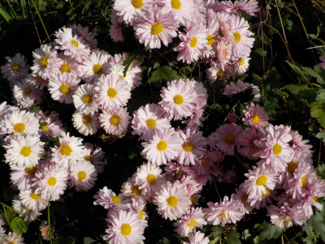
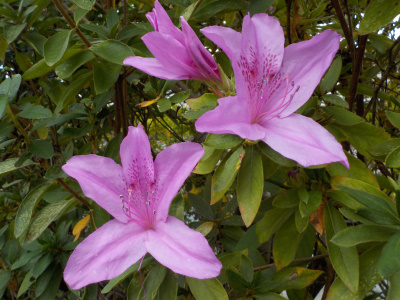
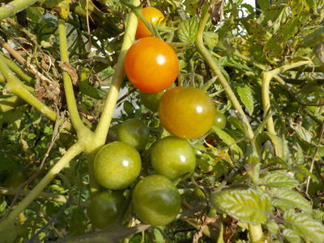
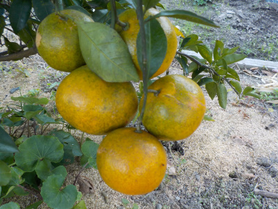
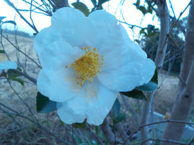
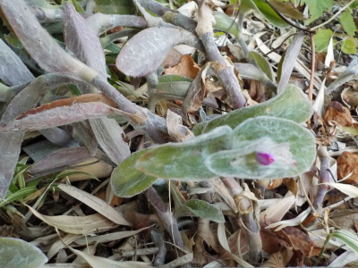
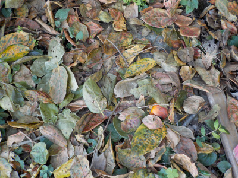

夕顔の種を採りました。
2018/11/25
今年は18個採れました。

来年は倍増させたいです。
2018/11/25
今年は18個採れました。
来年は倍増させたいです。
2018/11/18
寒くなると草花は枯れるイメージがありますが、意外と花が多いです

菊の仲間は普通に咲く時期ですよね。
今年は暖冬なのでいまだに夏の花が咲いてたりするので、あちこちで花が咲いてます。
2018/11/18
季節に関係なくよく咲きます。

たまたま気候が悪かっただけ？かもしれませんがよく咲くので、この株を増やそうかな。
来年暖かくなったら挿し木に挑戦しようと思います。
2018/11/18
オレンジ色の実のトマトを食べてみました。

味が薄かったです。
水っぽい。
もうトマトは終わったな。
2018/11/10
もうそろそろ食べれるかな？と、試に食べてみました。

まだ薄めで、爽やかな甘さでした。すっぱくはなかったです。
もう好きなときに収穫して食べれそうです。
柿が食べ終わったら食べようと思います。
2018/11/10
サザンカって綺麗なんですが、ベストの状態って少ないですよね。

この花はちょっとしおれた感じです。
ちょっと痛んだ状態の期間が長いので、近くで見るとそんなに綺麗じゃなかったりします。
2018/11/10
以前に名前が分からない植物があったんですが、ホームセンターで同じものを見つけたので名前が分かりました。

トラデスカンチアです。
覚えにくい名前ですね。
すぐに忘れそうです。
2018/11/10
柿の葉がすっかり落ちました。

枯葉の絨毯です。
これから寒くなりそうですね。
過去の日記
畑仕事じゃないよ。